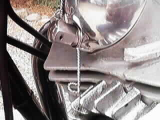
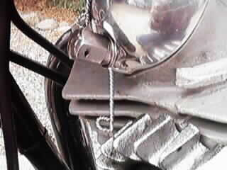

Summary:
This article covers what I believe is the correct way of keeping the finned exhaust nuts tight on a Norton Commando. I use this procedure on both my street and race bikes and have never had a exhaust nut come loose. A loose exhaust nut is the fastest way to destroy the threads in the exhaust ports.
Procedure:
First: Unless you are going for the concourse look or have a 850, replace the old exhaust nuts (NM18092 or 06-2464) with the 850 exhaust nuts (06-3988). This gets rid of the lock washer (06-2412) which rattles and does not keep the exhaust nuts very tight.
Second: Use good or new squash washers (06-3995 or 06-3253 or NMT2166) and the 850 exhaust nuts only. Drill a 1/16" safety wire hole every third fin on the exhaust nut. Drill this hole near the end of the flange away from the threaded end. It is easy to drill through the fins and with a hole every third fin it will be easy to find the correct angel for safety wiring. DO NOT DRILL A HOLE IN THE HEAD FINS!
Third: Put some oil or never-seize on the threads and tighten as tight as you can. I estimate around 70 to 80 ft lb. of torque. I weigh around 200 pounds and put a good portion of my weight into tightening the nuts.
Fourth: Run the engine for several miles or until normal operating temperature has been reached.
Fifth: Re-tighten the exhaust nuts. At this point you can repeat steps four and five one more time or go on to the next final step.
Last: Safety wire the exhaust nuts to the lower rocker cover nut. Keep in mind that both nuts will be wired from around the 10 o'clock position to this nut. What I do is loop the safety wire around the rocker cover nut one complete wrap and spin the wire the length required to meet up with the desired hole in the exhaust nut. Do not over tighten this part or you will have problems removing the wire to get to the tappets, but tighten enough to perform the required task of keeping the exhaust nut tight. Then I thread the wire through the hole in the exhaust nut and spin the wire tight. Finish off the end of the wire by cutting the excess wire leaving around 1/2" of twisted safety wire. Using needle nose pliers I role the end of the wire back on to itself so the sharp end is hidden from passing hands. I find that I can remove the rocker cover nut and then lift the safety wire over the stud to gain access to the tappets with out having to cut the wire. You can also place the wire loop back over the stud and with some fiddling get the loop of wire back over the rocker cover nut.

 

This page was written and designed by F. H. Eaton & Associates if you have any questions or comments please contact us at eaton@oldbritts.com